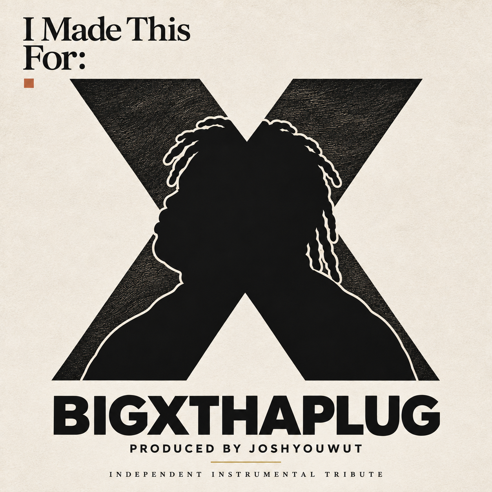

CONCEPT 01
Pressed in Chrome
Metallic edges. Heavy presence. No face.
CONCEPT 02
Soul in the Paper
Cut-paper profile. Analog texture. Soul.
CONCEPT 03
Dallas After Dark
Rain. City lights. A silhouette in the mirror.

CONCEPT 04
The Portrait Is the Letter
A bold X. A quiet profile. Graphic clarity.